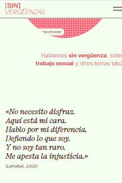

Sin Vergüenza
Sitio web del proyecto de título de Camil Gonzales que abre la conversación sobre el trabajo sexual en Chile y las voces que quedan fuera de los relatos. Reúne entrevistas callejeras en visualizaciones interactivas, escritos de trabajadorxs sexuales y contralecturas de los medios. Sigue en desarrollo.
- Año
- 2026
- Disciplina
- Diseño UX/UI
- Rol
- Programación de la página (en proceso)
- Herramientas
- HTML, CSS, JavaScript
